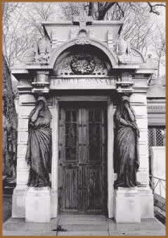

Aconteceu no mundo inteiro, um fenômeno
curioso no final do século XVII. Por medida sanitária
os sepultamentos passam a realizar-se em área aberta, nos
chamados campos-santos ou cemitérios secularizados.
Isto já não era novidade, japoneses,
chineses, judeus e outros povos já traziam tradicionalizada
a inumação a "céu aberto". Os protestantes
também, em muitos países o faziam. A mudança
afetou principalmente os povos de predominância católica.
No Brasil, o enterro fora da igreja era reservado aos não-católicos,
protestantes, judeus, muçulmanos, escravos e condenados,
até que por lei, inspirada na correlação
que se fez entre a transmissão de doenças através
dos miasmas concentrados nas naves e criptas das igrejas, se instalaram
os campos de sepultamento ensolarados.
Um outro motivo, que embora não diga respeito
a realidade brasileira merece ser citado, diz respeito a laicização
do Estado e sua separação da Igreja. Um exemplo
digno de nota é o caso do Père Lachaise de Paris,
que apesar de receber o nome de um padre católico abriga
tanto pessoas de várias religiões quanto não-religiosos,
sendo um dos dos primeiros cemitérios laicos e também
um dos mais famosos do mundo.
A
urbanização acelerada e o crescimento das cidades
é também uma importante razão para a criação
dos cemitérios coletivos a céu aberto, visto que
o crescimento populacional desenfreado não permitia mais
o sepultamento em capelas e igrejas, que já não
comportavam o aumento da demanda.
Numa primeira impressão o fato parece ter
explicação simples, mas quando se atenta para o
resultado ocorrido, sobre mais de um século, estudando-se
o fantástico derrame de fortunas nas construções
tumulárias pomposas, dos abastados de cada cidade, quando
se verifica a diferença de comportamento entre a sepultura
de igreja e a de construção livre arbitrada pela
fantasia do usuário, e também quando se considera
a história social e cultural do mesmo período, então
se percebem outras razões no fenômeno. Não
foi somente uma questão do ponto de vista higiênico,
ou seja, uma razão metade prática e metade científica
(e também política e social), da sociedade oitocentista.
Se esta mudança acontecesse apenas por esse motivo, os
cemitérios católicos em descampados teriam permanecido
sóbrios e padronizados do mesmo modo que os erigidos por
irmandades em mausoléus coletivos, ou como os de outras
religiões.
A simplicidade dos padrões tradicionais
e primitivos continuou caracterizando a sepultura coletiva enquanto
o fausto e a arrogância da tumulária individual se
desenvolveu espantosamente. Portanto, a verdadeira razão
da grande mudança de atitude e gosto já existia
há longos tempos no anseio de monumentalizar-se perante
a comunidade. Era e sempre foi o desejo dos mais abastados, distinguir-se
através de uma marca perene, de um objeto de consagração
- o túmulo - pela atração de comparar-se
aos grandes personagens da História, sem a menor cerimônia,
incluindo nesta leva os soberanos, os faraós, os reis,
os papas e os príncipes, que mereceram sepulcros diferenciados
dos demais.
Há de fato túmulos monumentais de
papas de acordo com a pompa de cada época, contudo sempre
integrados à construção da igreja. Há
papas que não restaram por virtudes, e sim pela eventualidade
do valor artístico, ou monumental de seus túmulos.
De qualquer modo, erigia-se a igreja como bem público,
integrada ao uso coletivo, e nela se fazia a sepultura do seu
doador e benfeitor...
Entretanto em muitas igrejas, originalmente levantadas
para serem o jazigo do doador, este descansa sob uma lápide
que nem perturba o nível do chão.
A arte tumulária varia com a data, acompanha
cada estilo de época, e de região, e jamais sonega
o caráter, a espiritualidade do meio em que ocorre. Sob
tal prisma, isto é, tomando-se a arte tumulária
como representativa desses atributos, podemos entender as estruturas
sociais e culturais dos meios, mesmo quando tal se acha restrita
a uma parcela da população. Aliás tal restrição
relaciona-se diretamente com o tipo de economia da sociedade,
estando deste modo a arte cemiterial condicionada a fatores de
caráter sociológico, econômico e cultural.
Texto
original de Beatrix Algrave
Extraído
e adaptado de www.beatrix.pro.br